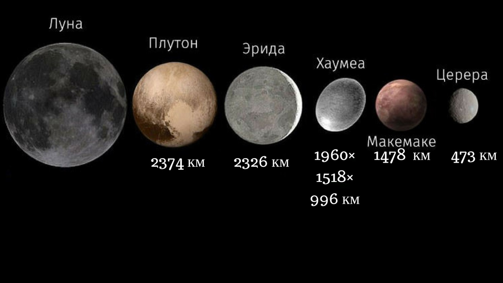

Главная
Дополнительно
Галерея
День Плутона - Факты

Изначально космическое тело считали девятой классической планетой Солнечной системы, но затем переименовали в карликовую планету.
Сейчас мы знаем, что масса Плутона равна примерно 0,2 % массы Земли.
На поверхности Плутона есть образование в форме сердца